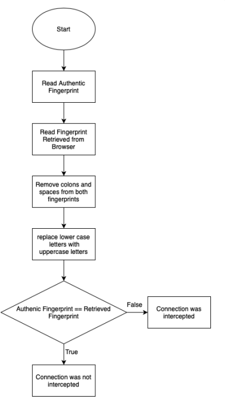

How Institutions Subvert the Most Basic Sense of Web Security
Austin J. Dlugosch
Allen High School
Computer Science II
Mr. Ben-Yaakov
August 26, 2022
With the number of daily tasks transitioning to being done over the internet, including those with sensitive information, security and privacy have become paramount. As such, most websites have transitioned from an HTTP connection to an HTTPS connection that is secure and impervious to eavesdropping. Through the Transport Layer Security protocol, an HTTPS connection maintains its integrity in 3 layers of protection. These layers are data encryption, preventing the interception and reading of data that is being transmitted, data integrity, preventing the modification of data without warning, and authentication, preventing imitations of trusted websites (Google Search Central, 2022). However, the once unbreakable HTTPS connections are no longer utterly safe from interception and eavesdropping.
Schools, workplaces, and Internet Service Providers became increasingly blinded as more websites used HTTPS encrypted connections. When compared to their previous ability to see into every personal detail of their users, it is obvious that a method to circumvent the lack of vision would be created. HTTPS Proxy Appliances were deployed to deceive and undermine their users' fundamental sense of security, but to see how the system is cheated, it is important to know how it operates. For almost 25 years, web browsers have used a third-party system of Certificate Authorities. Remote websites must prove their identity and authenticity to one of these Certificate Authorities in person. A remote website must present a digital certificate that is signed by a higher authority that the browser already trusts to establish a secure connection (Gibson Research Corporation, 2020). Yet all it takes for an HTTPS Proxy Appliance to compromise the privacy of their user's passwords, emails, medical records, and more is to add a single fraudulent certificate authority to their browsers.
But how does the HTTPS Proxy Appliance go about stealing your data? It does this through a form of a Man in the Middle attack, where an attacker eavesdrops or impersonates a server while still making the connection appear unaltered to the user (Imperva, 2021). This is most common on unsecured wifi connections in places such as coffee shops or hotels. There are two steps to a MITM attack: interception and decryption. There are several ways attackers can dupe their targets into providing their private information directly to them without them knowing, but for an HTTPS Proxy Appliance, the work is already done for them. All data is redirected to the proxy appliance then decrypted and logged for later use. After that, the proxy connects to the authentic server and transmits the re-encrypted data by impersonating the user. This all occurs without the user's knowledge as if nothing happened (Gibson Research Corporation, 2020). How can someone know not to elucidate sensitive information on a connection they believe to be entirely safe? The ramifications of logging private information are serious because it robs them of the ability to protect themselves and know the whereabouts of their information.
The scariest part of proxies intercepting data is that it cannot be blocked, but an SSL interception can reliably be detected because it is not possible to completely mimic any security certificate (Gibson Research Corporation, 2020). Every server has a public and private key. While the public key is known to all, its corresponding private key is never publically available, and it is needed to properly decrypt the data. In order for an SSL Proxy Appliance to decrypt your data, it must have a matching set of public and private keys. This means that the public keys will not match the authentic server. These changes, no matter their size, can be detected with a cryptographic hash. Hashes are complex mathematical algorithms that process data and return a fingerprint; they produce drastically different results even if there was a minuscule change in the data, as seen in Figure 1.
The Gibson Research Corporation hosts a website that checks popular websites' authentic fingerprints. By connecting to a website yourself and noting the fingerprint, you can compare the fingerprints to determine whether your connection is being intercepted. However, it is possible to detect different fingerprints while on an authentic server. These false positives are caused by large web presences like Amazon or Google because they may use more than one security certificate, and two users may obtain two different certificates, even though both connections are authentic. For example, the fingerprint displayed on the GRC website may be different from an authentic one you connect to. But like all other aspects of this nuanced system, there is a loophole to the GRC website. Because HTTPS proxies are highly configurable, the connection to the GRC website could be configured to not be intercepted, making everything accurate on the page and leading you to believe that no interception is occurring whatsoever. The fool-proof way to ensure a connection is not being intercepted is to reference a fingerprint from a susceptible connection, like at work or school, with a physical copy of one from home.
Schools, governments, and churches should not have a right to eavesdrop on our connections because there are few restrictions on the limit to which these institutions can surveil you. I understand that these measures are put in place partly to protect its users from inside threats, but protection should not come at the cost of our own privacy and security. Recently, my school was hacked, and sensitive information stored by the school was leaked and sold to people over the internet. Is it not possible that the private information intercepted and stored by my school could also be vulnerable to such threats? In the end, I do believe that these proxies are likely here to stay and the best way to avoid sensitive information from being surveilled is to conduct that business at home.
Gibson, S. (n.d.). Fingerprints. GRC | ;SSL TLS HTTPS Web Server Certificate Fingerprints. Retrieved August 26, 2022, from https://www.grc.com/fingerprints.htm
Google. (2022, August 19). Secure your site with HTTPS. Google. Retrieved August 25, 2022, from https://developers.google.com/search/docs/advanced/security/https?safe=active
What is MITM (man in the middle) attack. Imperva. (2019, December 29). Retrieved August 25, 2022, from https://www.imperva.com/learn/application-security/man-in-the-middle-attack-mitm/
Figure 1
